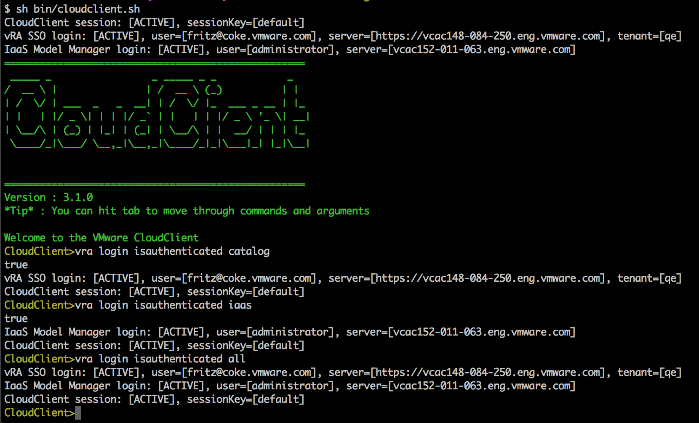

CloudClient Scripting
Automatic login can also be achieved using follwing three ways :-
This allows external scripts (bash/powershell etc) to interact and run commands.
We can use environment variables and properties file together to provide values of login variables selectively i.e. properties file can provide some values while other values will be taken from environment variables. Environment variables have higher precedence than properties file. Note that you have flexibility to define a variable in properties file and then override its value in environment variable. Highest precedence is given to CloudClient sessions if available, followed by Environment variables , followed by CloudClient.properties file. Following sequence explains precedence order in detail:-
There are different commands to know if the login was successful and to know general information about the current login. This is explained in the Validate Login section at the end.
Using a password Keyfile, CloudClient provides a way to encrypt your passwords. It is explained in section Encrypt Password to keyfile
Passwords can be provided in clear text or simply encrypted to a file using the following command:
# login keyfile --file mypass.txt [--password mypassword]
If you don't provide a --password parameter, you will be prompted to securely enter the password to encrypt to a file
vra_server=vraServer.mydomain.com
| Variable | Description |
|---|---|
| vra_server | vRA Server Name or IP Address |
| vra_tenant | Tenant to connect to, defaults to vsphere.local if left empty |
| vra_username | vRA Username - to login to Top level system administrator the username is ""administrator@vsphere.local |
| vra_password | vRA Password |
| vra_keyfile | Location to encrypted keyfile |
| vra_iaas_server | vRA Infrastructure Server Name, if left blank it is automatically discovered |
| vra_iaas_username | vRA NTLM Username, ie: Administrator |
| vra_iaas_password | vRA NTLM Password |
| vra_iaas_keyfile | Location to encrypted keyfile |
login autologinfile
Edit CloudClient.Properties file
#vra_server : vRealize Automation Virtual Appliance
vra_server=vraServer@mydomain.com
#vra_tenant : Tenant Name, defaults to vsphere.local
vra_tenant=Development
#vra_username : SSO username in the form user@domain.com
vra_username=User1@mydomain.com
#vra_password : SSO password
vra_password=mypassword
#vra_keyfile : Encrypted file location of SSO password
vra_keyfile=
#Some Administrator level API calls required Windows Authentication to communicate to the vRA Infrastructure Service Components
#vra_iaas_server : Infrastructure Server (Windows Authentication), defaults to finding the name dynamically from vRA
vra_iaas_server=
#vra_iaas_username : Windows username in the form user@domain
vra_iaas_username=Administrator
#vra_iaas_password : Windows password
vra_iaas_password=mypassword
#vra_iaas_keyfile : Encrypted file location of Windows password
vra_iaas_keyfile=
# create session for administrator@vsphere.local user #
export CLOUDCLIENT_SESSION_KEY=admin;
export vra_server=vcac148-085-048.eng.vmware.com
export vra_username=administrator@vsphere.local;
export vra_password=vmware;
sh cloudclient.sh vra tenant list;
# create session for fritz@coke.vmware.com user #
export CLOUDCLIENT_SESSION_KEY=fritz;
export vra_username=fritz@coke.vmware.com;
export vra_password=password;
export vra_tenant=qe;
sh cloudclient.sh vra credential list;
# create session for tony@coke.vmware.com user #
export CLOUDCLIENT_SESSION_KEY=tony;
export vra_username=tony@coke.com;
export vra_password=password;
export vra_tenant=qe;
sh cloudclient.sh vra credential list;
# re-use the session created for fritz@coke.vmware.com user #
export CLOUDCLIENT_SESSION_KEY=fritz;
sh cloudclient.sh vra credential list;
Once the CloudClient session is available or Environment vars are set or CloudClient.properties is in place (Sessions take highest precedence, followed by Environment variables followed by CloudClient.properties file); you can test to see of this was successful. Also the autologin will display the login information right away before presenting the cloudclient CLI as seen below.
vRA SSO login indicates the SSO authentication with vRA.
IaaS Model Manager login indicates the NTLM authentication with IaaS server.
Copyright 2014 VMware, Inc. All rights reserved.